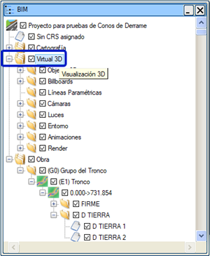
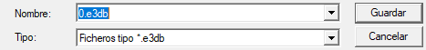
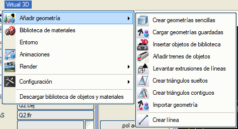
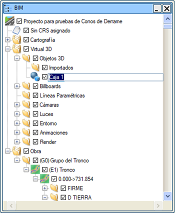
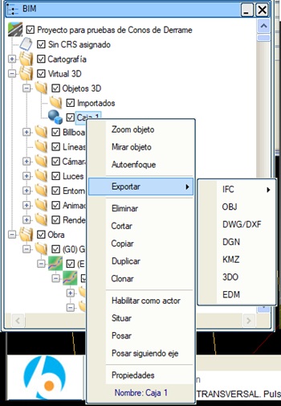
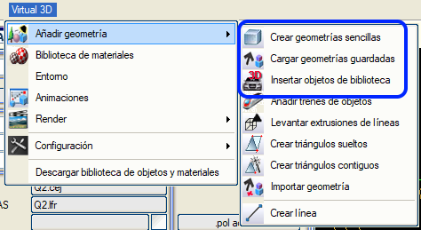
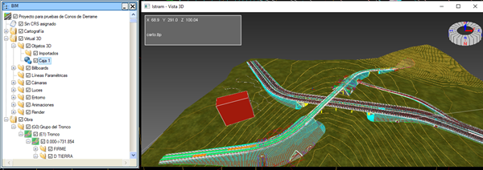

| |
|
SAHNE
|
|
Genel Bilgiler SANAL 3B sahnesi, bu modülde yönetilen tüm verilerin bağlı olduğu temel unsurdur; kütüphane elemanları (malzemeler, billboard'lar ve arka planlar) ve projeden bağımsız olan yapılandırma ayarları hariç. Bir sahnede kaydedilen bilgiler, oluşturulduğu bilgisayardan farklı bir bilgisayarda sahnenin yeniden oluşturulmasına olanak tanır. Istram ağacında, "Sanal 3B" düğümünde sahneyi bir dosyaya kaydetme ve yükleme seçenekleri mevcuttur. Bu dosyada kameraların, ışıkların, ortamın, animasyonların, render ayarlarının, 3B nesnelerin vb. yapılandırması kaydedilir... 
Bir sahneyi kaydedebilmek için BIM ağacı içinde Sanal 3B düğümüne gelip sağ fare tuşu ile bir .e3db dosyası kaydetmeniz gerekir: 
Sahnede bulunan herhangi bir eleman (kökeni ve karmaşıklığı ne olursa olsun) harici bir dosyada saklanabilir ve daha sonra kullanılabilir. Bu dosyaların uzantısı .3do'dur. Sanal 3B düğümünden sağ fare tuşuna basmak, kaydedilmiş bir sahneyi Açma imkanı verir. Bir sahne kaydedildiğinde, bir yandan tüm 3B geometri ve özellikleri, diğer yandan tanımlanmış 'sahne düzeninin' kendi elemanları saklanır: kameralar, ışıklar, ortamlar, render sistemleri ve animasyonlar. Ayrıca, sahnenin tüm düğümlerinin görünürlük durumu ve uygun durumlarda aktif eleman (kameralar, ortam veya render) da saklanır. 3B Nesneleri Kaydetme Sanal 3B'nin açılır menüsü içinde, daha sonra gerekirse 3B nesneler olarak kaydedilebilecek basit geometriler oluşturulabilir. 
Bir nesneyi dışa aktarmak için, nesnenin ya Düzenleyici Ağacı'nda ya da sahnenin kendisinde seçilmesi ve ardından sağ fare tuşuna basılarak özelliklerinin görülmesi veya diğer seçenekler arasından dışa aktarılması gerekir. 
Oluşturulan elemanın üzerine sağ fare tuşu ile tıklandığında, onu sahnede değiştirmek için bir dizi özelliğe sahip olacağız: 
Nesne diğer kullanıcılarla paylaşılmak isteniyorsa, kullanılan isimlerin anlaşılır olması gerektiği unutulmamalıdır, bu nedenle yorum alanını da kullanmak uygun olabilir.
3B Nesneleri Yükleme Bu elemanların daha sonra yüklenmesi, nesne oluşturma panelinden, orijinal koordinatlarda veya kullanıcı tanımlı bir konumda yerleştirme simgeleriyle gerçekleştirilir. Eğer kütüphaneye herhangi bir nesne kaydettiyseniz, bu nesne Kütüphaneden 3B Nesne Ekle seçeneğinde mevcut olacaktır; bu seçeneğe resimde belirtilen üçüncü simge aracılığıyla erişilebilir. 

|